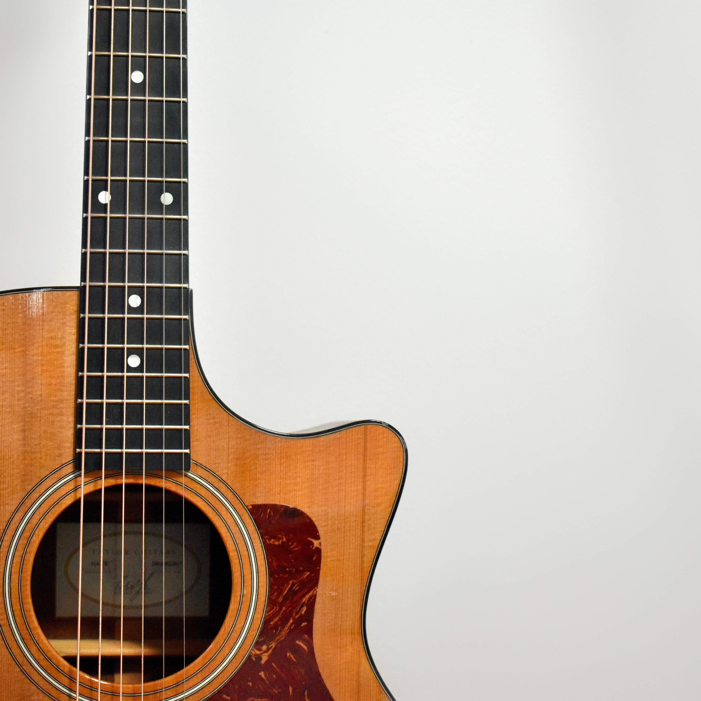
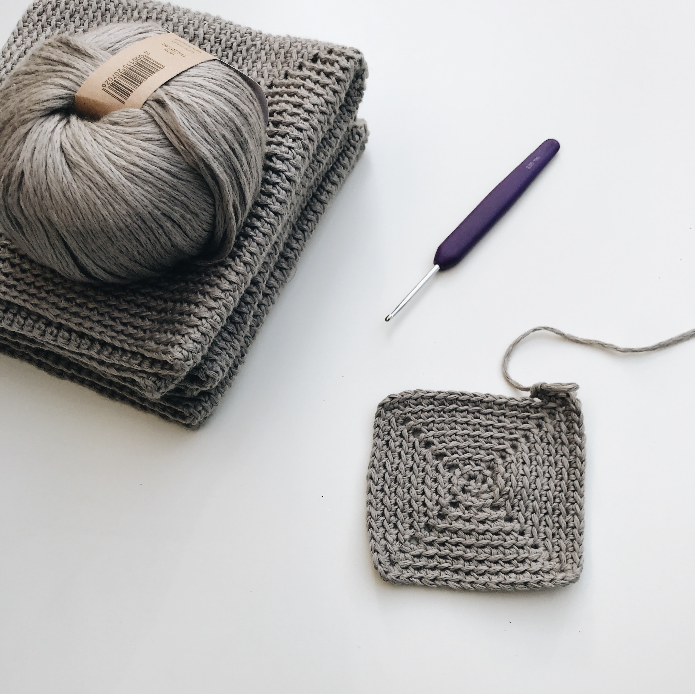
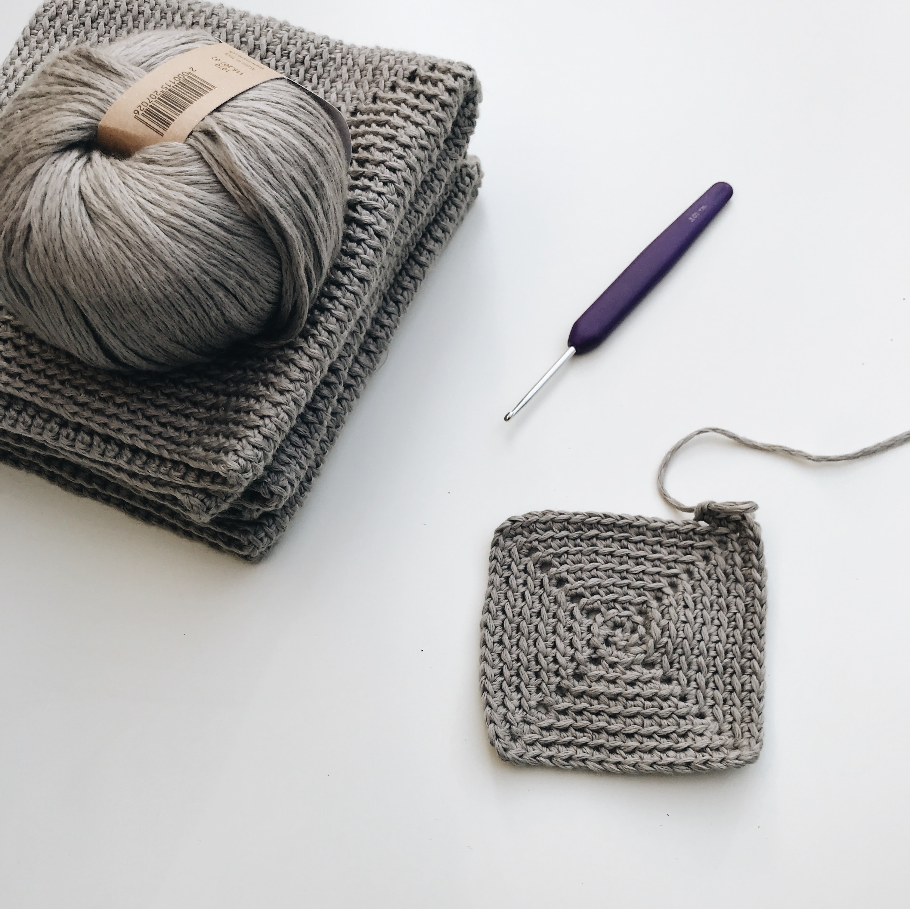

Welcome.I'm so
happy you're here.
Profile
__________自己紹介1996年生まれ。不動産の営業職を担当していた際、
イラストレーターを使い広告を作成する業務に携り
デザインの面白さを知りました。その後デザインの
スキルを身に着けるため、バナー制作を行う会社に
就職し、現在はより幅広い分野で活動することを考え
コーディングとwebデザインを勉強中です。
Skill
__________スキルPhotoshop
Illustrator
HTML
CSS



Hobby
__________特技・趣味コーディングの勉強の合間に読書や編み物をしたり、
youtubeなどでギターの演奏の仕方を勉強したりしています。
幼いころピアノを習っていたこともあり、音楽が好きなので
楽器を演奏したりすることで気分転換をすることが多いです。